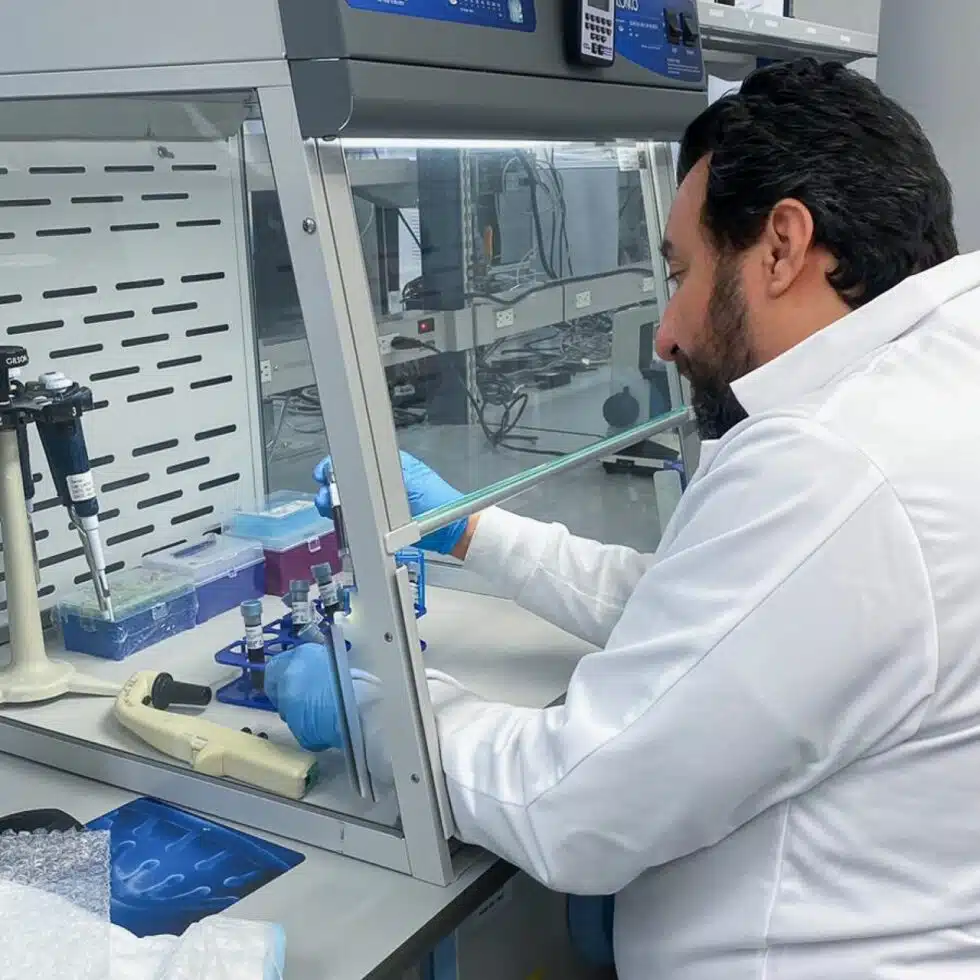
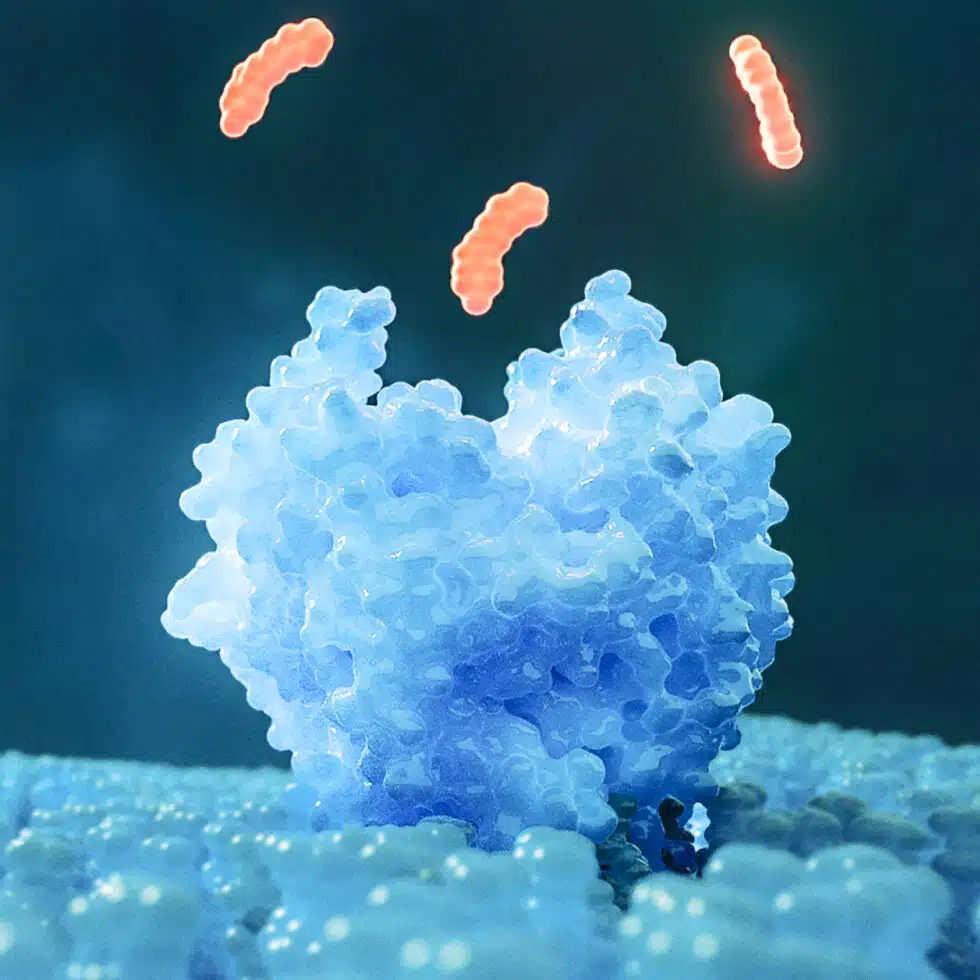

We innovate around the complexities of the immune system to treat the cause of autoimmune disease and not merely the symptoms.
LAPIX is a clinical-stage biopharmaceutical company dedicated to pioneering innovative and first-in-class treatments for people diagnosed with autoimmune diseases. We take a patient-centric approach by developing novel, orally administered, immune tolerance restoration therapies that are non-immunosuppressive. We believe there is a better, gentler way for treating patients with autoimmune diseases.
Read MoreWe are at the precipice of unlocking the full potential of TIM receptors and transforming the approach that scientific and medical communities utilize to treat auto-immune diseases.
By challenging the conventional treatment approach of immune system suppression, and shifting it to our novel, immune tolerance approach, we are discovering new possibilities for patients diagnosed with autoimmune diseases.
Our methodology for treating autoimmune disease through the TIM pathway relies on engaging the TIM receptors (TIM-3, TIM-4) with high-potency induction in an antigen-agnostic manner. This first-of-its-kind solution will replace existing treatments for autoimmune disease. Instead of suppressing the immune system, our therapies reestablish immune balance by restoring Treg and Breg populations to regulate pathogenic T cells.


The TIM pathway is a complex network of interactions involving TIM family proteins. We believe that it is the starting point for identifying the root cause and potential cure of immune-related diseases. These proteins are vital to regulating immune tolerance, T cell responses, inflammation and various immune-related disorders.
The TIM pathway was discovered in the early 2000s and validated by vast research over the last 20 years, and we concentrate on the TIM family of receptors, specifically TIM-3 and TIM-4, because of their central and influential role in immune regulation. The body's ability to effectively engage TIM is lost during chronic inflammation and can lead to loss of tolerance. The end result can be the development or exacerbation of autoimmune diseases, causing the immune system to mistakenly attack and damage itself.
Read MoreBeware of Job Recruitment Fraud. Read More.